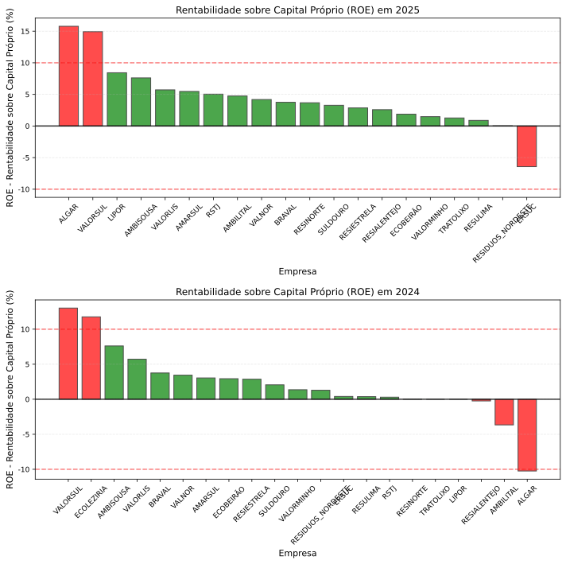
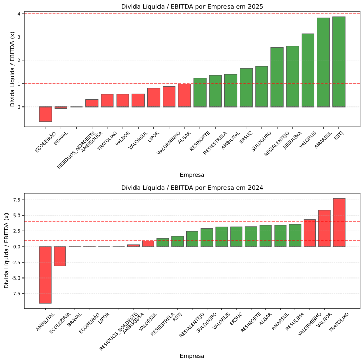
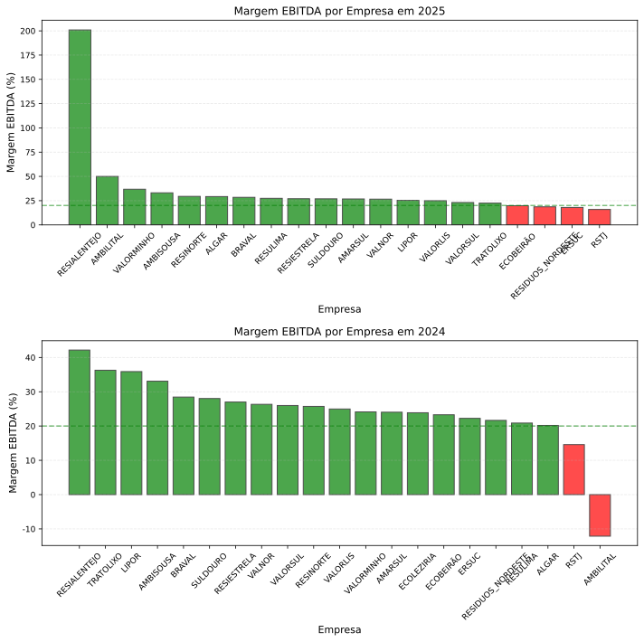
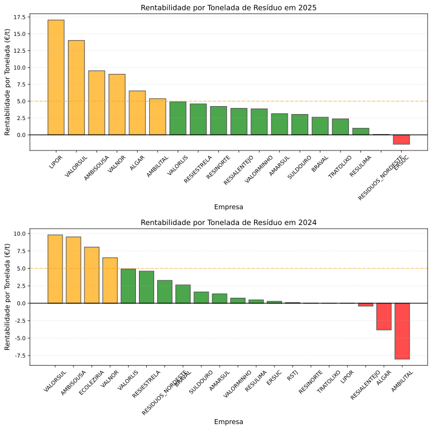
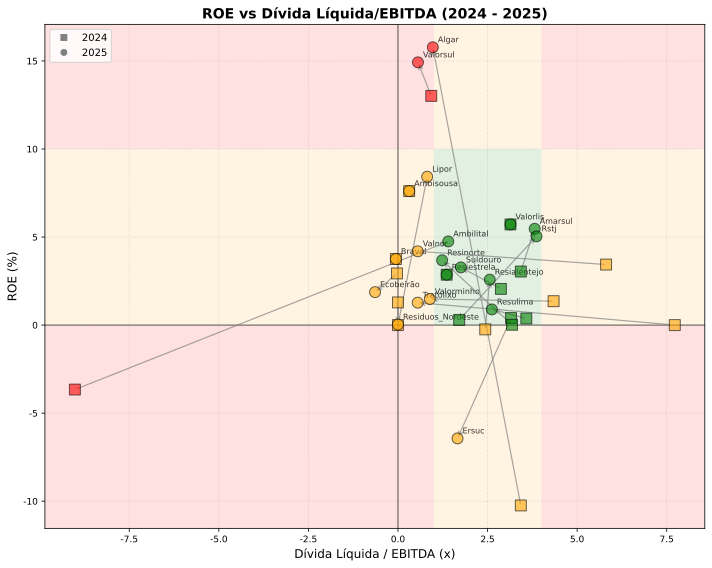

1. Sumário Executivo
O processamento de resíduos urbanos em Portugal é um monopólio regulado controlado pela Mota-Engil através da Empresa Geral do Fomento (EGF), e regulado pela Entidade Reguladora dos Serviços de Águas e Resíduos (ERSAR). Os municípios contratam "sistemas multimunicipais", como a ALGAR e VALORSUL, detidas maioritariamente pela EGF, que praticam uma tarifa, regulada pela ERSAR, do custo por tonelada de resíduos.
Esta análise de dados financeiros e operacionais de 2024 sugere que os sistemas multimunicipais apresentam diferenças significativas de rentabilidade e sustentabilidade, que levam tanto a dividendos excessivos a serem pagos pelos cidadãos como a falta de investimento.
Principais conclusões baseadas na análise de dados financeiros e operacionais de 2024:
-
1. Elevada heterogeneidade na rentabilidade: A rentabilidade sobre capital próprio (ROE) varia entre -13% (ALGAR) e +13% (VALORSUL/VALORLIS).
-
2. Produção de energia é o principal diferenciador: Produção e venda de energia é o principal fator explicativo nas diferenças de rentabilidade:
-
VALORSUL: 442 kWh/t produzidos → lucro de 9,8 €/t → ROE de 13%
-
ALGAR: 49 kWh/t produzidos → resultado negativo de -3,8 €/t → ROE de -10% A diferença de 9x na produção energética correlaciona-se com o diferencial de 13,6 €/t no resultado. Observa-se assimetria de infraestrutura, não de eficiência operacional.
-
3. Distribuição de lucros: A VALORSUL cobrou aos municípios uma tarifa regulada pela ERSAR de 47,93 €/t, dos quais 10 €/t foram distribuídos como dividendos aos acionistas. A distribuição representa aproximadamente 20% da tarifa paga pelos municípios.
-
4. Limitações de investimento: Sistemas sem valorização energética apresentam resultados insuficientes para autofinanciar investimento. O endividamento médio do sector é 3,0-3,6x EBITDA, limitando a capacidade de investimento. A VALORSUL, com apenas 0,93x, tem margem financeira para investir enquanto os restantes dependem de fundos públicos.
-
5. Heterogeneidade de resultados sob regulação: O modelo tarifário da ERSAR (proveitos permitidos = custos + remuneração de capital) apresenta resultados heterogéneos: sistemas com resultados negativos operam com infraestrutura limitada; sistemas rentáveis distribuem demasiados dividendos.
1.1. Sobre Este Relatório
Esta análise baseia-se exclusivamente em dados públicos dos relatórios e contas de 2024 de 16 sistemas multimunicipais, que no conjunto servem 8,9 milhões de habitantes em 205 municípios (aproximadamente 86% da população de Portugal continental). O foco é económico-financeiro.
2. Enquadramento
2.1. Estrutura do Sector
A gestão de resíduos urbanos em Portugal funciona como um serviço público em monopólio regulado, organizado em dois níveis:
Serviço "em Baixa" (Municípios):
-
Recolha porta-a-porta e contentores de rua
-
Limpeza urbana e varredura
-
Gestão de ecopontos de proximidade
-
Gerido pelos municípios, por vezes externalizado
Serviço "em Alta" (Empresas Multimunicipais):
-
Transporte em massa e estações de transferência
-
Triagem e valorização material
-
Valorização energética (incineração ou biogás)
-
Deposição final (aterros)
-
Gerido por empresas multimunicipais, maioritariamente EGF (Mota-Engil)
Esta análise foca-se exclusivamente no Serviço "em Alta".
2.2. Enquadramento Regulatório
-
ERSAR (Entidade Reguladora dos Serviços de Águas e Resíduos): Define tarifas em alta via modelo de proveitos permitidos (custos + remuneração de capital)
-
APA (Agência Portuguesa do Ambiente): Define PERSU 2030 e Taxa de Gestão de Resíduos (TGR)
-
Decreto-Lei n.º 96/2014: Enquadra as concessões aos sistemas multimunicipais
2.3. A quem se destina
-
Os municípios, que usufruem e pagam os serviços das multimunicipais
-
A ERSAR, que regula as multimunicipais
-
Em menor escala, a APA, pela interação entre fatores económicos e ambientais
3. Análises
3.1. Sistemas Multimunicipais Analisados
Esta análise cobre 19 sistemas de gestão de resíduos urbanos "em alta", incluindo as 11 concessionárias multimunicipais do grupo EGF e oito sistemas intermunicipais/multimunicipais independentes (LIPOR, TRATOLIXO, AMBISOUSA, AMBILITAL, BRAVAL, ECOLEZIRIA, RESIALENTEJO e RSTJ). Ficam de fora alguns serviços e empresas municipais com componente de resíduos integrada (água/saneamento/resíduos), cuja informação financeira específica para RU não é diretamente comparável.
No total, os sistemas analisados servem 9,4 milhões de habitantes distribuídos por 232 municípios, representando aproximadamente 91% da população de Portugal continental.
| Sistema | Região | Municípios | População (hab) |
|---|---|---|---|
Valorsul |
Lisboa e Oeste |
19 |
1.600.000 |
Lipor |
Grande Porto |
8 |
1.000.000 |
Ersuc |
Centro |
36 |
947.519 |
Resinorte |
Norte |
35 |
904.000 |
Tratolixo |
Lisboa/Cascais-Sintra |
4 |
880.969 |
Amarsul |
Península de Setúbal |
9 |
807.902 |
Algar |
Algarve |
16 |
474.300 |
Suldouro |
Porto/Aveiro |
2 |
444.591 |
Ambisousa |
Vale do Sousa |
6 |
328.605 |
Resulima |
Minho/Lima |
6 |
313.183 |
Valorlis |
Leiria |
6 |
311.000 |
Braval |
Braga |
6 |
298.451 |
Rstj |
Médio Tejo |
12 |
271.172 |
Valnor |
Alto Alentejo |
25 |
242.952 |
Resiestrela |
Cova da Beira |
14 |
180.568 |
Ecoleziria |
Lezíria do Tejo |
7 |
136.426 |
Ambilital |
Alentejo Litoral |
7 |
115.435 |
Resialentejo |
Baixo Alentejo |
8 |
86.505 |
Valorminho |
Minho |
6 |
73.902 |
3.2. Rentabilidade
O primeiro indicador analisado é a rentabilidade sobre capital próprio (ROE), que compara o lucro da empresa num ano com o capital próprio da empresa.
Para uma empresa num sector maduro e num monopólio regulado, Valores altos sugerem que a regulação pode estar a permitir uma remuneração do capital acima do necessário para assegurar investimento e qualidade, transferindo rendas adicionais para o acionista. Valores consistentemente baixos, abaixo do custo de capital, indicam que o privado suporta parte do custo do serviço, o que pode desincentivar investimento e pôr em causa a sustentabilidade no médio prazo. valores negativos indicam insustentabilidade do sistema.

| Empresa | ROE (%) |
|---|---|
Valorsul |
13,0 |
Ecoleziria |
11,8 |
Ambisousa |
7,6 |
Valorlis |
5,7 |
Braval |
3,8 |
Valnor |
3,4 |
Amarsul |
3,0 |
Resiestrela |
2,9 |
Suldouro |
2,1 |
Valorminho |
1,4 |
Ersuc |
0,4 |
Resulima |
0,4 |
Rstj |
0,3 |
Resinorte |
0,0 |
Tratolixo |
0,0 |
Lipor |
0,0 |
Resialentejo |
0,2 |
Ambilital |
-3,7 |
Algar |
-10,2 |
3.3. Sustentabilidade Económica
O segundo indicador analisado é o rácio da dívida líquida por EBITDA, um indicador padrão da sustentabilidade da dívida da empresa. Grosso modo, um valor baixo indica que a empresa não está a contrair dívidas para investir, enquanto um valor alto indica que a empresa está em risco de ser incapaz de suportar as atuais dívidas. Por exemplo, um rácio de 4x indica que a empresa precisa de manter os resultados por 4 anos para conseguir pagar as suas dívidas atuais.

| Empresa | Dívida Líquida / EBITDA (x) |
|---|---|
Ecoleziria |
-3,07 |
Braval |
0,06 |
Lipor |
0,00 |
Ambisousa |
0,31 |
Valorsul |
0,93 |
Resiestrela |
1,52 |
Rstj |
1,71 |
Resialentejo |
2,44 |
Suldouro |
2,99 |
Valorlis |
3,10 |
Ersuc |
3,16 |
Resinorte |
3,20 |
Amarsul |
3,40 |
Algar |
3,43 |
Valorminho |
3,43 |
Resulima |
3,58 |
Valnor |
5,81 |
Tratolixo |
7,73 |
Ambilital |
9,18 |
3.4. Margem EBITDA
O terceiro indicador analisado é a margem EBITDA, que mede a percentagem da receita que se traduz em EBITDA, isto é, em resultados antes de juros, impostos, depreciações e amortizações Uma margem EBITDA de 20% no contexto das multimunicipais indica, grosso modo, que a empresa gera em EBITDA cerca de 20% da tarifa cobrada aos municípios.

| Empresa | Margem EBITDA (%) |
|---|---|
Resialentejo |
42,2 |
Tratolixo |
36,3 |
Lipor |
35,9 |
Ambisousa |
33,1 |
Braval |
28,4 |
Suldouro |
28,0 |
Resiestrela |
27,0 |
Valnor |
26,3 |
Valorsul |
26,0 |
Resinorte |
25,7 |
Valorlis |
25,0 |
Valorminho |
24,1 |
Amarsul |
24,0 |
Ecoleziria |
23,9 |
Ersuc |
22,2 |
Resulima |
20,9 |
Algar |
20,2 |
Rstj |
14,6 |
Ambilital |
11,9 |
Todas as empresas analisadas apresentam margens EBITDA superiores a 20%, sinal de uma capacidade consistente de geração de resultados operacionais face à receita.
3.5. Rentabilidade por Tonelada
O terceiro indicador analisado é a rentabilidade por tonelada, que compara a rentabilidade com o número de toneladas de resíduos urbanos processados, e representa a valorização económica dos resíduos produzidos pelos municípios.

| Empresa | Rentabilidade por Tonelada (€/t) |
|---|---|
Valorsul |
9,8 |
Ambisousa |
9,5 |
Ecoleziria |
8,1 |
Valnor |
6,5 |
Valorlis |
4,9 |
Resiestrela |
4,6 |
Braval |
2,6 |
Suldouro |
1,6 |
Amarsul |
1,3 |
Valorminho |
0,7 |
Resulima |
0,5 |
Ersuc |
0,3 |
Rstj |
0,1 |
Resinorte |
0,0 |
Tratolixo |
0,0 |
Lipor |
0,0 |
Resialentejo |
0,4 |
Algar |
-3,8 |
Ambilital |
-8,0 |
A análise sugere uma elevada variação da rentabilidade dos resíduos: enquanto a ALGAR perde quase 4€ por tonelada, a VALORSUL lucra quase 10€ por tonelada. Este indicador explica, em larga medida, a viabilidade económica de cada um dos sistemas multimunicipais.
4. Conclusões
4.1. De lucros excessivos a insustentabilidade
Em vários sistemas, combinam‑se margens EBITDA elevadas, baixo endividamento e rentabilidades sobre capital próprio claramente acima do custo de capital de um monopólio regulado. É o caso da VALORSUL, ECOLEZÍRIA, AMBISOUSA ou VALNOR, com ROE na ordem dos 10–13% e rentabilidades por tonelada entre 6 € e 10 €/t, num contexto em que as empresas distribuem lucros significativos. Isto indica que o modelo tarifário está a permitir a extração de rendas económicas em serviços essenciais em monopólio à custa de tarifas mais altas para municípios e munícipes do que o necessário para assegurar o investimento e a qualidade do serviço.
Um segundo grupo de sistemas (ERSUC, RESINORTE, RESULIMA, LIPOR, TRATOLIXO, SULDOURO, entre outros) apresenta margens EBITDA confortáveis (tipicamente acima de 25%), mas ROE muito próximo de 0% e rácios de dívida líquida/EBITDA em torno de 3–4x. Na prática, estas entidades operam em equilíbrio económico, mas com alavancagem relevante e pouca folga para absorver choques (subidas de juros, quebras de volumes, atrasos regulatórios). A sustentabilidade de médio prazo destes sistemas depende da capacidade regulatória para alinhar tarifas, investimento elegível e gestão da dívida, sob pena de empurrar necessidades de reequilíbrio financeiro para os municípios.
Por fim, existem sistemas que combinam margens EBITDA fracas, endividamento muito elevado e resultados líquidos negativos, como a ALGAR e, sobretudo, a AMBILITAL, com rácios de dívida líquida/EBITDA superiores a 5–9x e prejuízos por tonelada significativos. Estes casos são situações de insustentabilidade: não geram meios próprios suficientes para renovar ativos e servir a dívida, ficando dependentes de fundos públicos, reequilíbrios tarifários ou transferências extraordinárias dos municípios. A coexistência, no mesmo quadro regulatório, de sistemas que distribuem dividendos abundantes e de sistemas estruturalmente descapitalizados é um sinal de desajuste profundo do modelo de proveitos permitidos.
O objetivo de um regulador económico em serviços em monopólio não é nivelar resultados à força, mas garantir que a remuneração do capital é consistente com o risco do serviço e que os ganhos de eficiência são partilhados com os utilizadores. Os dados de 2024 mostram que, no serviço em alta de resíduos urbanos, esse equilíbrio não está hoje assegurado em Portugal.

4.2. Em Lisboa, os munícipes estão a subsidiar os acionistas do monopólio
-
Tarifa regulada em 2024: 47,93 €/t
-
Lucro gerado: 8,26 M€ (9,80 €/t)
-
ROE: 13%
-
Margem EBITDA: 51%
-
Margem Liquida: 20%
-
Destino do lucro: 100% dividendos
Esta política de distribuição implica que aproximadamente 20% da tarifa paga pelos municípios em 2024, cerca de 9,8 €/t, foi resultado líquido e distribuída como dividendos aos acionistas.
Num serviço de resíduos prestado em monopólio regulado, um ROE de 13% é fortemente indicativo de que:
-
As tarifas foram fixadas acima do estritamente necessário para cobrir custos eficientes e uma remuneração prudente do capital, OU
-
Os ganhos de eficiência obtidos face aos pressupostos regulatórios não estão a ser partilhados com os municípios, sendo apropriados pelos acionistas, OU
-
O modelo de cálculo da remuneração do capital (taxa de retorno e base de ativos regulada) está desajustado face ao risco efetivo da concessão.
Em qualquer destes cenários, o resultado é o mesmo: o quadro regulatório permitiu à Valorsul extrair um retorno excessivo num serviço em monopólio, o que se traduz num custo tarifário superior ao estritamente necessário para os municípios e, em última instância, para os munícipes.[1]
5. Metodologia
Todos os valores financeiros foram extraídos dos Relatórios & Contas de 2024 das empresas, quando necessário convertidos para indicadores por tonelada com base nas quantidades de resíduos reportadas nos mesmos documentos.
Os cálculos de ROE, dívida líquida/EBITDA, margens e rentabilidade por tonelada foram efetuados com scripts em Python disponibilizados no repositório https://github.com/jorgecarleitao/relatorio-residuos-urbanos-portugal, permitindo a reprodução integral das tabelas e figuras deste relatório.
6. Agradecimentos
Este relatório não teria sido possível sem a qualidade e transparência dos relatórios anuais disponibilizados pelas empresas do sector.
Um agradecimento especial à EGF (Empresa Geral do Fomento) e às empresas do grupo pela disponibilização de relatórios e contas anuais completos, transparentes e em formato legível por computador. Esta prática facilita a análise comparativa, promove a transparência do sector e serve de exemplo para outras empresas públicas e reguladas.
Agradece-se igualmente à ERSAR pela disponibilização de dados regulatórios e indicadores de qualidade de serviço que complementaram esta análise.
7. Referências
7.1. Relatórios e Contas das Empresas (2024)
| Sistema | Relatório & Contas 2024 |
|---|---|
ALGAR |
|
AMARSUL |
|
AMBILITAL |
|
AMBISOUSA |
|
BRAVAL |
|
ECOLEZIRIA |
|
ERSUC |
|
GESAMB |
|
LIPOR |
|
PLANALTO BEIRAO |
|
RESIALENTEJO |
|
RESIDUOS NORDESTE |
|
RESIESTRELA |
|
RESINORTE |
|
RESULIMA |
|
RSTJ |
|
SULDOURO |
|
TRATOLIXO |
|
VALNOR |
|
VALORLIS |
|
VALORMINHO |
|
VALORSUL |
7.2. Fontes Regulatórias e Legais
-
ERSAR - Entidade Reguladora dos Serviços de Águas e Resíduos
Website: https://www.ersar.pt
Regulamento Tarifário do Serviço de Gestão de Resíduos Urbanos -
APA - Agência Portuguesa do Ambiente
Website: https://apambiente.pt
PERSU 2030 - Plano Estratégico para os Resíduos Urbanos -
Decreto-Lei n.º 96/2014, de 26 de junho
Regime jurídico do sector dos resíduos urbanos
Relatório elaborado em 7 de abril de 2026, baseado em dados financeiros e operacionais de 2024.
| Este relatório é de acesso aberto. O código-fonte, os dados e as instruções para reproduzir a análise estão disponíveis em GitHub. Contribuições são bem-vindas. |